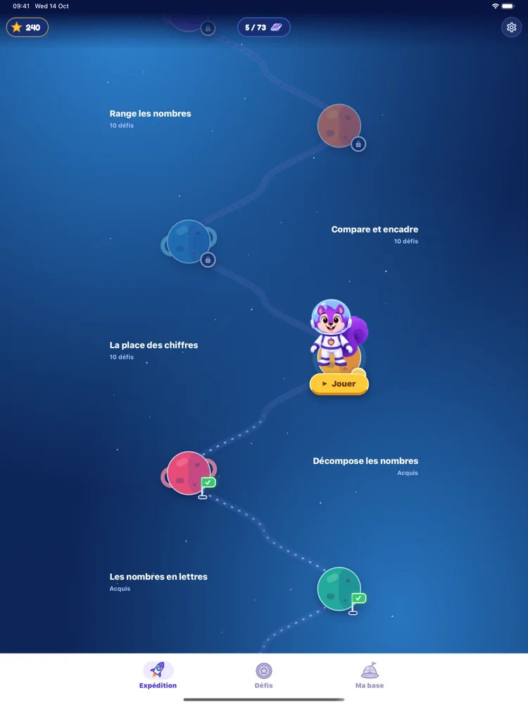
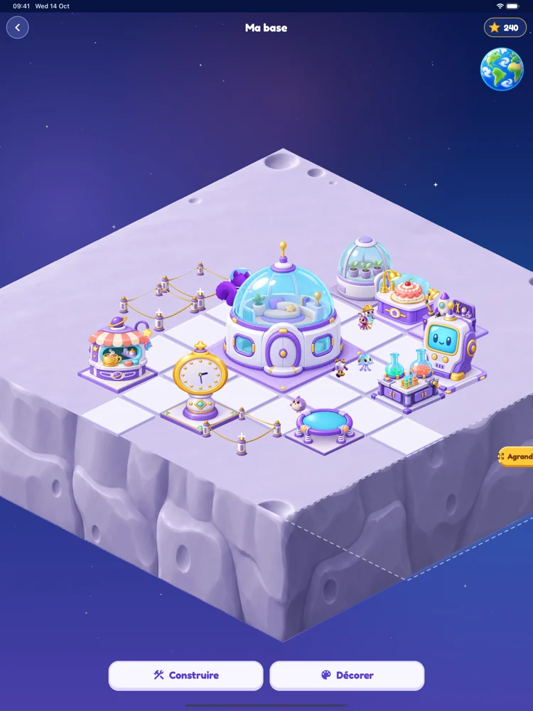
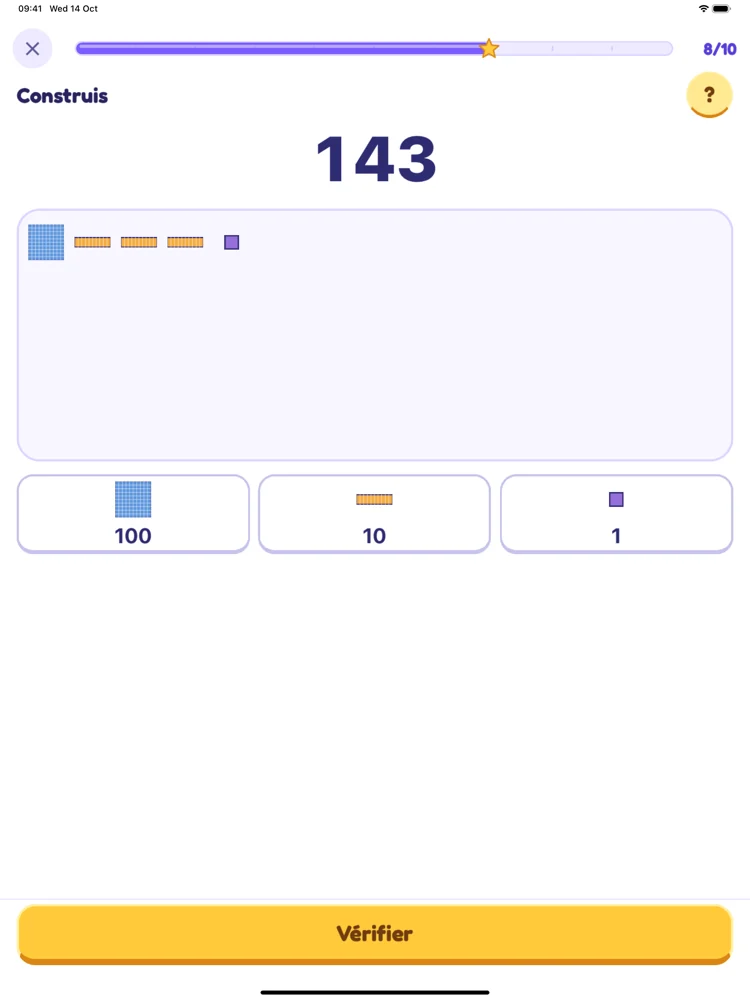
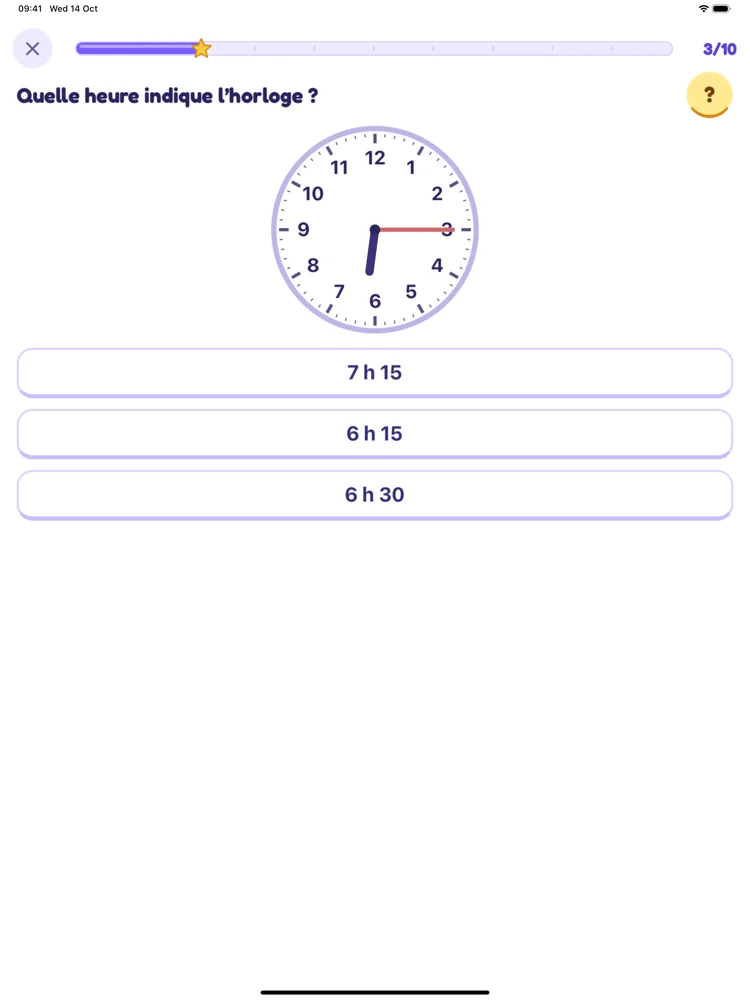
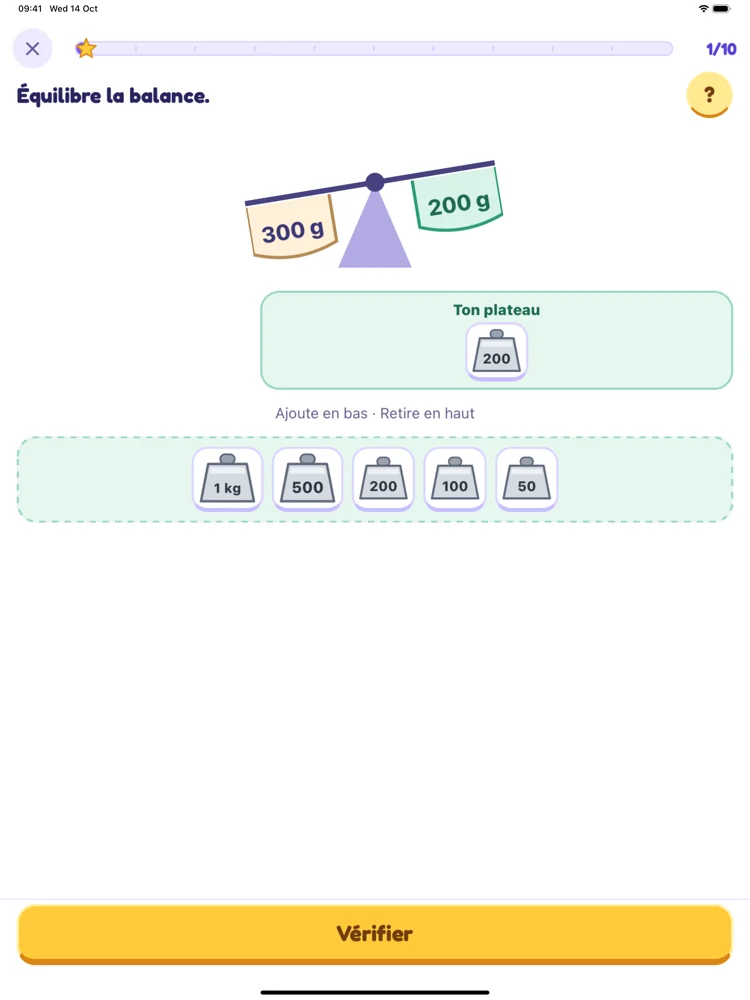
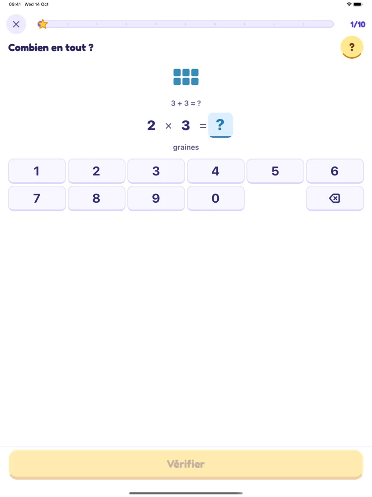

Explore
De planète en planète : nombres, calcul, problèmes, heure, mesures et géométrie.
Avec Ada, l’écureuil cosmonaute, explore les nombres et fais grandir ta base spatiale.
Des missions de dix questions, des maths à manipuler et des coups de pouce pour avancer à son rythme.
Gratuit · Sans publicité · Sans compte
De planète en planète : nombres, calcul, problèmes, heure, mesures et géométrie.
Construis des nombres, lis une horloge, équilibre une balance. Des gestes et des images pour comprendre.
Les étoiles gagnées permettent de construire et de faire vivre ta base spatiale.
Vues de l’application sur tablette, pendant la préparation de la version 1.0.





La première version est actuellement en test sur iOS et Android. Les liens de téléchargement public seront ajoutés après sa publication.
Les activités fonctionnent hors connexion. La progression est sauvegardée sur l’appareil ; elle ne se synchronise pas entre appareils.